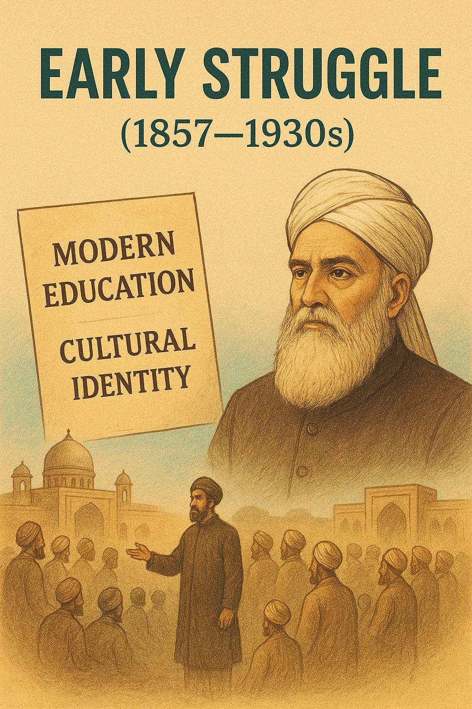
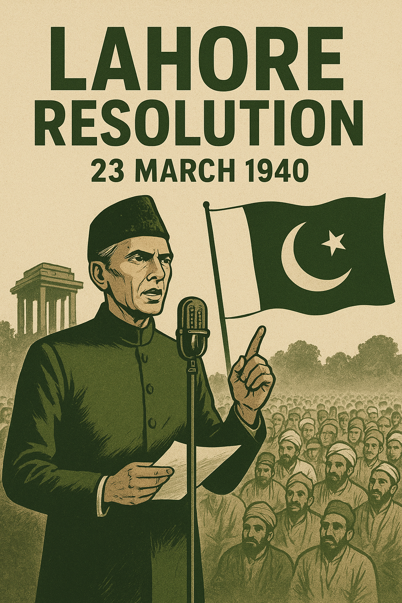
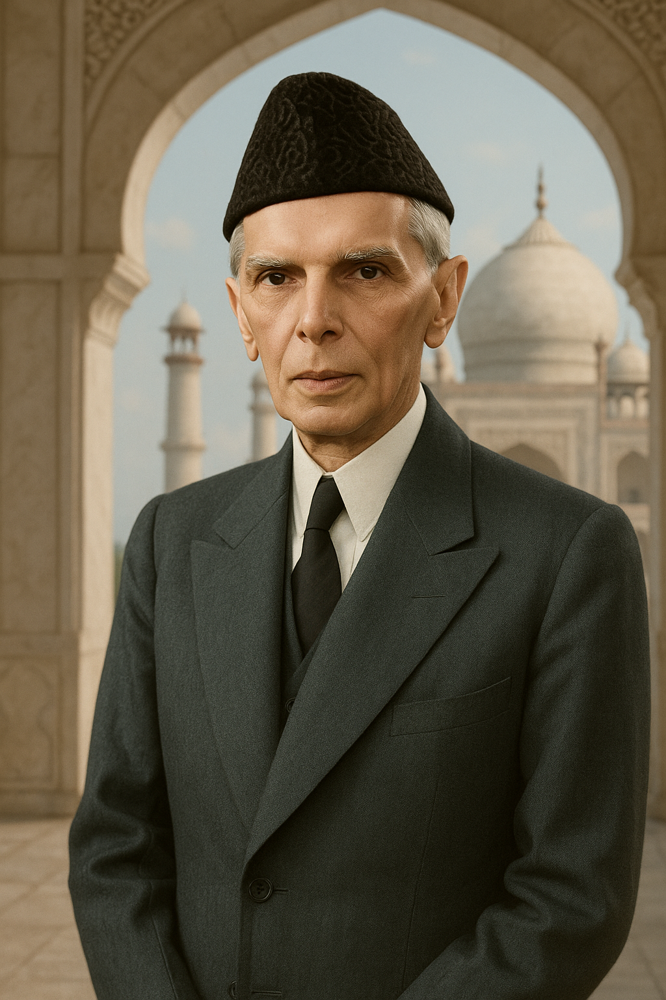
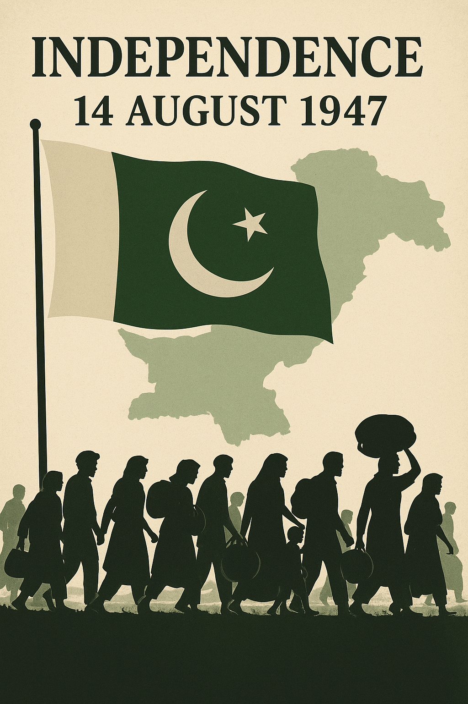
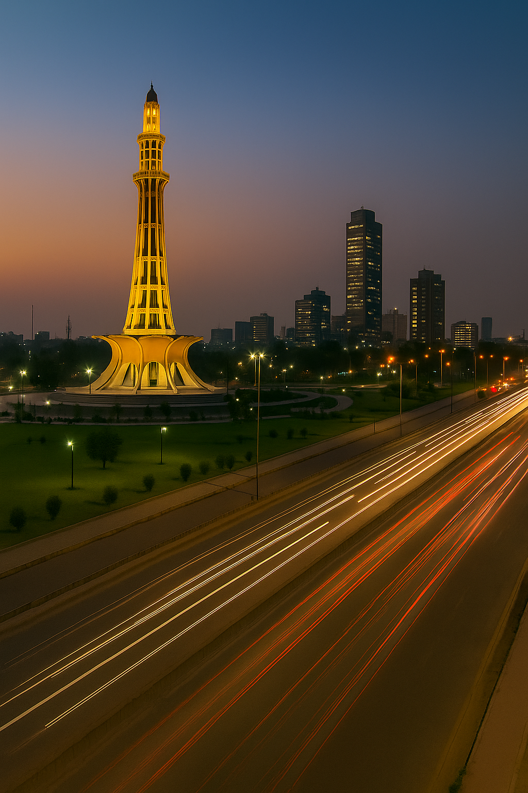

📜 Early Struggle (1857–1930s)
After the War of Independence in 1857, Muslims of the subcontinent faced decline in politics, education, and economy. Reformers like Sir Syed Ahmed Khan emphasized modern education and cultural identity. This period laid the foundation of the Two-Nation Theory and the demand for a separate homeland.

🌟 Allama Iqbal’s Vision
In his Allahabad Address (1930), Allama Iqbal presented the idea of a separate state for Muslims. He envisioned a land where Muslims could live freely, practice their culture, and develop as a nation. His poetry awakened the youth with dreams of independence and self-respect.

🏛 Lahore Resolution (1940)
On 23rd March 1940, under the leadership of Quaid-e-Azam Muhammad Ali Jinnah, the All-India Muslim League passed the Lahore Resolution in Minto Park (now Iqbal Park), Lahore. It demanded independent states for Muslims in Muslim-majority areas, which later evolved into the idea of Pakistan.

🕊 Quaid-e-Azam Muhammad Ali Jinnah
Known as the Father of the Nation, Quaid-e-Azam led Muslims with unity, faith, and discipline. Through tireless struggle, negotiations, and determination, he achieved the impossible – creating Pakistan on 14th August 1947. His leadership inspired millions and remains a guiding light for the nation.

🌹 Fatima Jinnah – Mother of the Nation
Fatima Jinnah, sister of Quaid-e-Azam, played a vital role in the independence movement. She stood by her brother, mobilized women, and spread awareness about freedom. Her dedication earned her the title "Madar-e-Millat" (Mother of the Nation).

🎉 Independence – 14 August 1947
Pakistan came into being as a sovereign state on 14th August 1947. Millions migrated across borders, facing immense hardships. Despite struggles, the dream of a free homeland was realized, changing the map of the world forever.

⚔ Pakistan–India Wars
Pakistan and India fought several wars (1948, 1965, 1971, and the Kargil conflict in 1999). The 1965 war became a symbol of national unity and bravery, with heroes like Major Raja Aziz Bhatti. Despite challenges, Pakistan emerged resilient and determined to defend its sovereignty.

🌍 Modern Pakistan
Today, Pakistan is a vibrant nation with rich culture, traditions, and resilience. From arts and music to science and technology, Pakistan continues to grow. Its people carry forward the dreams of Iqbal and Jinnah with hope for a prosperous future.